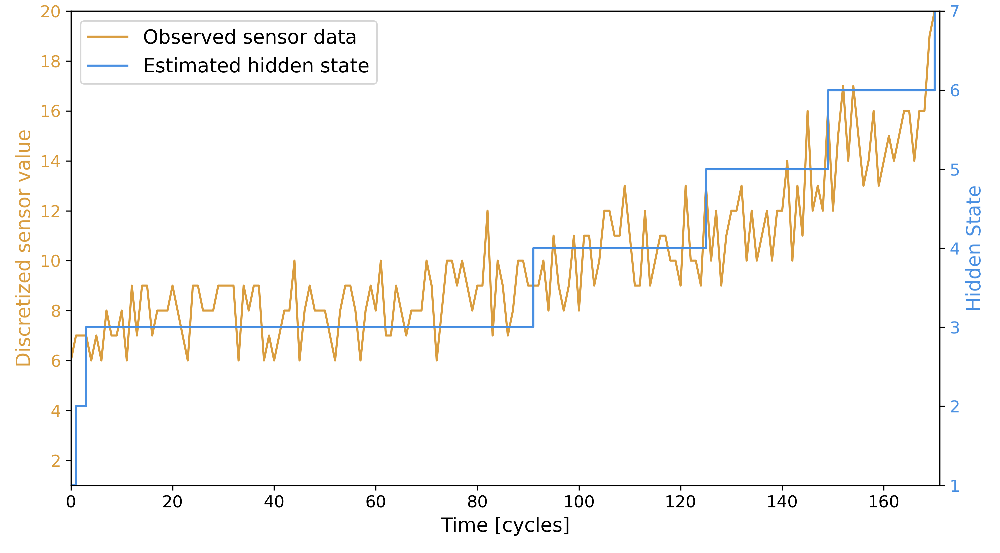
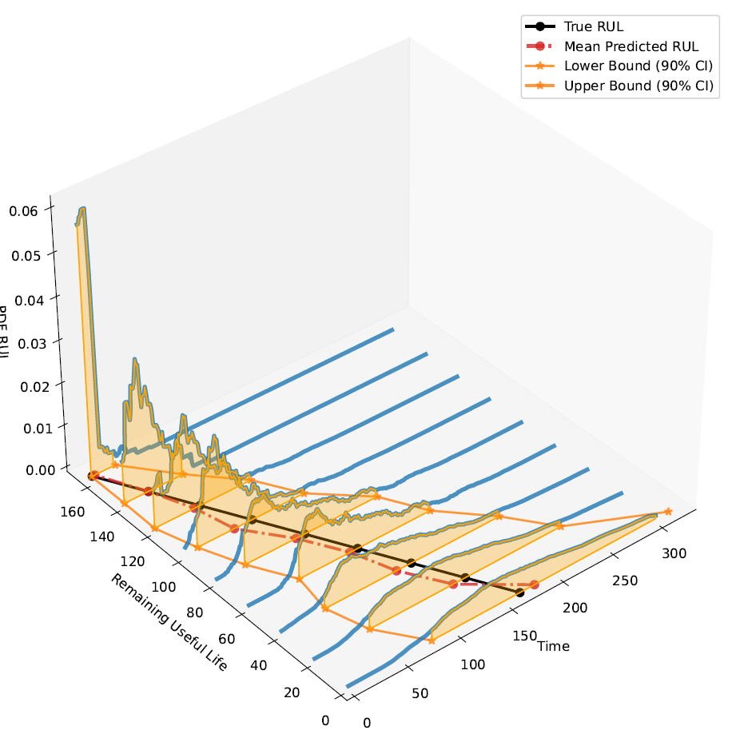

Fundamentals of HMMs for Prognostics
A Hidden Markov Model (HMM) is a stochastic model that represents systems that evolve over time with hidden (unobservable) states. It consists of:
States: The hidden conditions of the system (e.g., different levels of degradation)
Observations: The sensor data that we can measure.
Transition Probabilities: The likelihood of moving from one state to another.
Emission Probabilities: The likelihood of a state producing a certain observation.
Initial Probabilities: The probability distribution of starting in each state.
In the context of prognostics, we use an HMM to model degradation over time. Each hidden state represents a different damage level, and the final state represents failure. By analyzing sensor data, we can estimate which state the system is in and predict when a failure might happen.
When training an HMM, we use historical sensor data to learn the model’s parameters. Once the model is trained, we can apply it to new data in real time to estimate the most likely sequence of states that led to the observed measurements.
In the image below you can see in orange the values of discretized sensor data, and in blue the estimation of states.
{kind=link}
To simplify the modeling, we make a few key assumptions:
The system starts in a “good as new” condition: Always begins in the first state
The system only degrades over time: The system cannot “heal” or revert to an earlier state
Failure is observable: The final state (failure) always corresponds to a specific observable measurement, unlike other states that can have multiple possible observations.
By using estimated states, it is possible to calculate the Remaining Useful Life (RUL) of the engineering system. This can be done with a prognostic measure (you can read more about that here). This prognostic measure gives as a result a probability density function (pdf) for each time step, as shown in the image below.
{kind=link}
The HSMM follows the same principles as the HMM, however, it relaxes some assumptions which makes it able to model more complex degradation processes. The main difference is that the HMM emits one observation per state while in the HSMM a state can produce multiple observations for the time of its duration. This makes HSMMs more flexible and better suited for real-world systems where degradation doesn’t always happen at fixed intervals.